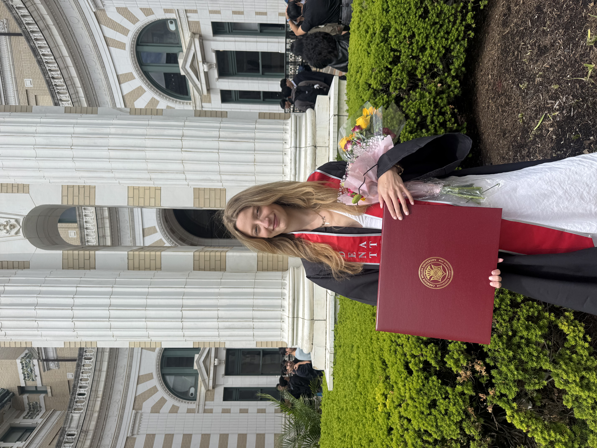
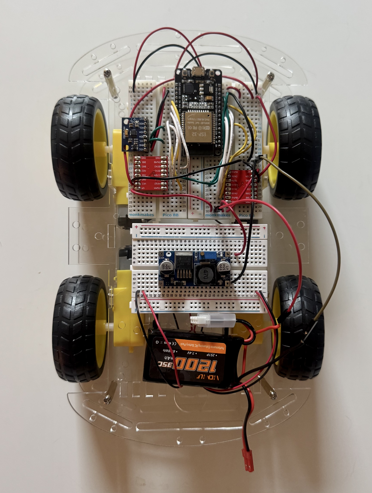

Hi, I'm Katherine
Electrical & Computer Engineer!

Add katherine-photo.jpg
I am a Carnegie Mellon Electrical and Computer Engineer graduate, specializing in machine learning and embedded systems.
featured projects
Electrical & Computer Engineer!
I am a Carnegie Mellon Electrical and Computer Engineer graduate, specializing in machine learning and embedded systems.
I studied Electrical and Computer Engineering at Carnegie Mellon University, focusing on embedded systems and machine learning. I love building innovative technology that bridges the gap between intelligent algorithms and real-world physical systems.
Outside of engineering, I served as a four-year student-athlete and captain on Carnegie Mellon’s Varsity Volleyball Team, a sport I continue to play and coach today. I'm also currently training for the Pittsburgh Marathon, and when I'm not running, I love to travel and read!


End-to-end pipeline for ingesting and transforming raw sensor data into predicted American Sign Language characters.
Python / k-NN / I2C / Raspberry Pi

Multi-threaded RTOS executing Rate-Monotonic Scheduling on Cortex-M4 for hardware PWM motor control, UART telemetry, and LCD management.
ARM Assembly / Embedded C / STM32 / RTOS

4WD autonomous mobile platform integrating ESP32 and micro-ROS over Wi-Fi for real-time velocity parsing, FreeRTOS task separation, and IMU telemetry.
ROS 2 / micro-ROS / ESP32 / FreeRTOS

1D Temporal Convolutional Diffusion model trained to generate collision-free, multi-modal 2D paths for autonomous navigation using Classifier-Free Guidance.
PyTorch / Diffusion / Robotics / D4RL